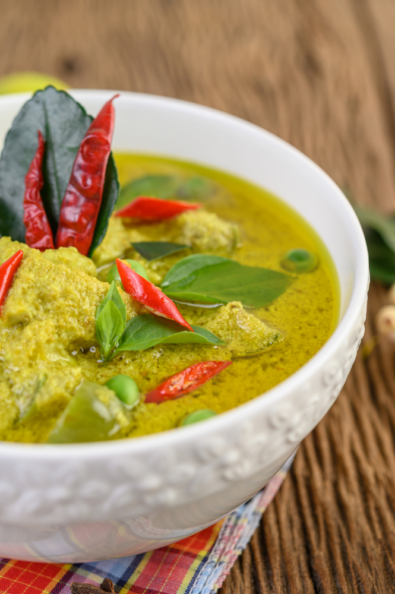

Thai Green Curry

Description
Thai green curry with chicken and rice
Stunning tender chicken with jamsine rice, mushrooms and broccoli
Ingredients
- 200g Rice
- 2 Chicken breast fillet - cut to inch pieces
- 100g Mushrooms
- 10g Jasmine
- 3 heads of broccoli
- 1 tablespoon of oil
- 1 can (200g) Cocunut milk
Steps
- Heat the oil in a pan over medium-high hear.
- Add chicken; cook and stir until brown, 5-10 minutes.
- Stir in curry paste and fry for a further 2 minutes.
- Add coconut milk, stir through and bring to the boil.
- Allow to simmer for 15 minutes, stirring occasionaly.
- In the meantime, cook rice.